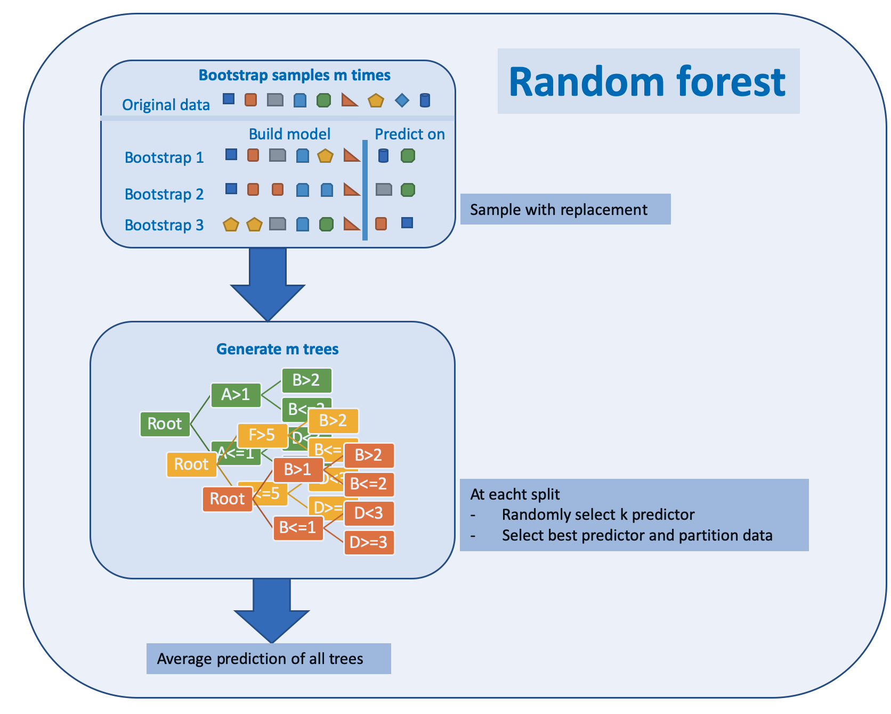

5.3 
Bootstrap is a widely applicable and extremely powerful statistical tool that allow assigning measures of accuracy associated with a given estimator or statistical learning method.
It is used by the random forest algorithm as described in chapter 5.3.1
5.3.0.1 Bagging
Bagging is short for bootstrap and aggregation and is a general purpose procedure for reducing the variance of a machine learning algorithm. It is particularly useful and frequently used in the context of decision trees.
For random forests the method works as follows:
Bootstrapping for random forest:
- Generate training data by bootstrapping from the original training data set
- Generate a tree
- Repeat this M times
- Predict by averaging the predictions of all trees
5.3.0.2 Boosting
Boosting can be utilized for regression and classification problems. It produces an ensemble of weak learners, typically decision trees. The models are build sequentially allowing optimization of an arbitrary differentiable loss function. An example on how boosting works for tree is given in chapter 5.3.2
5.3.0.3 Types of decision trees
Two dominant concepts are:

Two dominant concepts are used for ensemble tree methods are described at
5.3.1 Random forest TBD
Random forest has its name from the randomly selected predictors at each split. The Algorithm is described in (Kuhn and Johnson 2013) p. 200:
- Select number of models to build m
- for each model
- generate bootstrap sample of the original data
- train a tree model for this sample
- at each split
- select randomly k of the original predictors
- select best predictor
- partition the data
- until model stop criteria is meet
- average prediction of all trees for new samples
The algorithm can be depicted as below

Random forests have weaknesses and strengths
Pros and cons of random forest:
- Pro
- Handle higher dimensionality data very well
- Handles missing values well
- Cons
- Due to aggregation of all trees no precise values for regression
bootstrap: random sample with replacement
bagging: short for bootstrap and aggregation Bagging is a general approach that uses bootstrapping in conjunction with any regression or classification model to construct an ensemble
Each model in the ensemble is than used to generate a prediction for a new sample and there m prediction are averaged to give the bagged model’s prediction
TBD
5.3.2 Gradient boosted trees TBD
The algorithm of boosted trees for regression is described in (James et al. 2013) p. 323:
- Set \(\hat{f} = 0\) and \(r_i = y_i\) for all \(i\) in the training set
- For \(b=1,2,\dots,B\) repeat:
- Fit a tree \(\hat{f}^b\) with \(d\) splits (\(d+1\) terminal nodes) to the training data \((X,r)\)
- Update \(\hat{f}\) by adding in a shrunken version of the new tree \(\hat{f}(x) \leftarrow \hat{f}(x) + \lambda \hat{f}^b(x)\)
- Update the residuals \(r_i \leftarrow r_i + \lambda \hat{f}^b(x_i)\)
- Output the boosted model \(\hat{f}(x) = \sum_{b=1}^{B}\lambda \hat{f}^b(x)\)
Figure based on (Zhang et al. 2018), added explanation at the right hand side
Boosted trees have weaknesses and strengths
Pros and cons of boosted trees:
- Pro
- Supports different loss functions
- Cons
- Prone to overfitting
- Carefully tuning of hyperparameters is required
Another introduction to boosted trees is given at the XGBoost Documentation with a thorough mathematical explanation of the approach.
References
James, Gareth, Daniela Witten, Trevor Hastie, and Robert Tibshirani. 2013. An Introduction to Statistical Learning. Vol. 112. Springer.
Kuhn, Max, and Kjell Johnson. 2013. Applied Predictive Modeling. Vol. 26. Springer.
Zhang, Zhongxing, Geert Mayer, Yves Dauvilliers, Giuseppe Plazzi, Fabio Pizza, Rolf Fronczek, Joan Santamaria, et al. 2018. “Exploring the Clinical Features of Narcolepsy Type 1 Versus Narcolepsy Type 2 from European Narcolepsy Network Database with Machine Learning.” Scientific Reports 8 (1): 1–11.